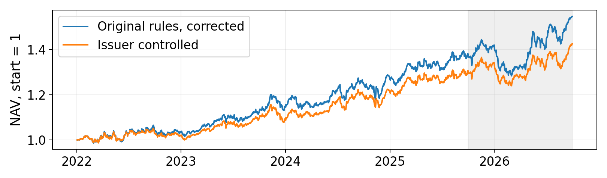

Corrected accounting and retrospective risk study | October 3, 2026
Acquisitions can create overpayment, integration costs and financing risk. Investors may initially underweight those costs and reprice the buyer over subsequent months. The testable prediction is negative post-filing stock performance relative to a market hedge, after dividends, financing, borrow and trading costs.
This is a hypothesis, not a demonstrated causal effect. Synergies can benefit buyers. Savor and Lu (2009) find evidence that successful stock-financed acquisitions can benefit acquirers relative to failed deals [1]; their work does not justify treating every acquisition as value destruction. The strategy is also exposed to short squeezes and takeover-target premiums.
Massive acquisition-agreement 8-K disclosures supply filing dates, tickers, supporting text and source URLs. Existing prior-day market-cap inputs select filers with cap at least $2B. The retained input has 1,109 event records. The first session close strictly after the filing date is the entry; same-day entry is excluded. An event receives up to 2% of current NAV in stock short and an entry-beta SPY long. Beta uses prior sessions [-260:-10], clipped to 0.5-1.5, with fallback 1 when history is insufficient. Scheduled exit is 60 sessions after entry.
Windows: development (IS), January 2022-September 2025; historical test, October 2025-September 2026. The test was already inspected before this revision. No candidate or parameter is reselected here. “Filer” is the executable label: it is not equivalent to “verified acquisition buyer.”
Massive split-adjusted closes do not incorporate cash dividends [2]. Dividends are therefore accounted separately [3]. Current historical snapshots and split normalization are not proof of a point-in-time live feed.
The old calculation applied constant event weights to each day's percentage returns. This revision enters share quantities and holds them until an actual exit or a disclosed risk trim. NAV equals free cash + restricted cash + signed accrued obligations - marked stock shorts + marked SPY holdings. Short-sale proceeds are restricted, earn no rebate and cannot fund an additional unrestricted hedge.
Stock trades cost 10 bps and SPY trades 2 bps on actual traded notional. Borrow is 1% annually on prior marked stock liability, charged for elapsed calendar days. Positive free cash earns French RF; negative cash pays RF plus 150 bps/year. Ex-date dividends create receivables or short liabilities, settled on pay-date. These are explicit modeling assumptions, not historical broker terms.
The ledger includes 39 source-linked action rows for cash mergers, ticker identities, successor obligations and the FBHS/MBC spinoff. Cash mergers close the short and hedge at the event session; stock/cash conversions preserve original expiry. CVRs are reserved at contractual maximum, a conservative liability bound rather than observed fair value. BLD uses an estimated cash-election proration; lender election and final delivery are unknown. MBC distributed short shares are bought back at the first regular-way close. These post-protocol accounting decisions are recorded in DEVIATIONS.md.
Accounting only: retain the original 50-event limit and allow issuer overlap. Share-value drift means there is no enforceable 100%-NAV short or 2%-issuer limit. Issuer controlled: reject concurrent same-issuer entries, cap fee-aware entry stock exposure at 2% per issuer and 100% total short, and cover excess marked exposure with proportional paired-hedge sales. Trims incur costs. This changes the strategy retrospectively; it is reported separately without choosing a winner.
Executable quotes are required. On November 8, 2024, CLSK's missing close causes a logged 2.01% carried issuer exposure rather than a fabricated trim. Same-close sizing and execution remain idealized. Broker locate, recall, margin and liquidation behavior are absent. Live deployment requires those inputs and a stale-feed entry stop.
There are zero unresolved overdue exits in the four final configurations. Sixteen synthetic accounting tests pass, including dividend accrual, calendar-day borrow, corporate actions, insolvency and future-price invariance. Replayed NAV identities agree within 2 x 10-15. This verifies accounting arithmetic, not historical execution feasibility.
Fixed diagnostics double fees with 3% borrow, or delay entry five additional sessions. Neither is a parameter search or multi-day-fill simulation. Original-note Sharpe figures use different accounting and benchmark definitions.
| Configuration / window | CAGR | Ann. vol. | Excess Sharpe | Max DD |
|---|---|---|---|---|
| Accounting / IS | 9.07% | 8.39% | 0.60 | -7.45% |
| Accounting / test | 11.96% | 11.66% | 0.70 | -11.12% |
| Controlled / IS | 7.43% | 7.54% | 0.45 | -6.75% |
| Controlled / test | 9.18% | 9.89% | 0.55 | -9.19% |
| Controlled / to Aug. | 3.34% | 10.13% | -0.01 | -9.19% |
IS has 939 sessions and the full test 251. Annualized Sharpe = mean(daily NAV return - RF) / standard deviation of that excess series x sqrt(252). CAGR compounds NAV; volatility uses total daily returns. Drawdown resets each displayed window with initial NAV included in the peak.
The controlled test arithmetic annual return is 9.27%; its total-return Sharpe is 0.94, distinct from cash-excess Sharpe 0.55. French rates/factors stop August 31; 21 September sessions use the last RF observation. Through August, excess Sharpe is -0.01. The full-window positive result depends heavily on September returns, not merely the RF convention.

Continuous NAV; test shaded. Series include maximum-CVR reserves and delivery proxies.
| Controlled diagnostic | IS Sharpe | Test Sharpe |
|---|---|---|
| Base | 0.45 | 0.55 |
| 2x fees, 3% borrow | 0.13 | 0.26 |
| Five additional sessions delay | 0.47 | 0.07 |
One hundred seeded IS placebos use the same feasible issuer/event multiplicities, random available dates ending July 1, 2025 and exclusion of +/-90 calendar days around each issuer's acquisition filings. Seven records across KRMN, MIME and NLSN lack feasible control dates and are removed from both observed and control samples. The main candidate remains unchanged; the matched comparison has 725 events.
The matched observed cash-excess Sharpe is 0.47, versus placebo mean -0.53 and 95th percentile -0.11. 0 of 100 placebos equal or exceed observed; the finite-sample tail fraction is (1 + count)/(1 + 100) = 0.0099. This is an encouraging date-specific contrast, not a family-wise significance result. Calendar conditions, event clustering, occupancy and execution availability need not be exchangeable. Rejection of these controls does not prove acquisition causality or a live trading edge.
| Controlled attribution | Ann. alpha | NW alpha t | SMB loading | R-squared |
|---|---|---|---|---|
| IS | 0.72% | 0.27 | -0.43 | 0.51 |
| Test to Aug. 31 | 9.08% | 1.18 | -0.62 | 0.50 |
FF5 plus momentum regressions use the same cash-excess return as headline Sharpe, with Newey-West lag 5 errors. RF is not subtracted twice. Test attribution ends August 31 (230 sessions); September is omitted rather than inventing factor data. Strong negative SMB exposure explains substantial variation, while residual alpha t-statistics are weak. The strategy may partly express a size/style exposure rather than acquisition-specific mispricing.
All 1,109 records have cached supporting text and source URLs, but the transparent snippet heuristic suggests only 56 buyers and 10 targets, leaving 1,043 unknown. No human labels exist; no classifier accuracy is claimed. A seeded 30-event review sheet is supplied. Suggestions use filing text alone and are not trading filters; future volatility cannot establish an ex-ante buyer label.
The legacy grid declared 204 variants, 165 usable in its saved report. The project's separate discovery tables contain 36 rows and the momentum sweep 18 variants plus a reference. These are broader research exposures, not 32 independent trials. No project-wide multiplicity correction is claimed. The revision adds two accounting/control configurations and two diagnostics, without selection. Old selection statistics are not transplanted onto the new ledger.
| Illustrative AUM | 95th % entry / ADV | Entries >5% ADV | Entries >3 days* |
|---|---|---|---|
| $10M | 1.60% | 0.56% | 0.14% |
| $50M | 8.02% | 13.92% | 0.98% |
| $100M | 16.03% | 32.07% | 6.19% |
| $150M | 24.05% | 44.73% | 13.92% |
*Share of entry-sized orders requiring more than three days at 5% of prior 20-session ADV, assuming constant ADV and price. The 711 IS entries have complete ADV. This is not an execution simulation; borrow and crowded demand can reduce deployable capital.
At $100M, the largest entry is 167.05% of prior ADV. An entry-based, two-sided square-root impact illustration gives 3.28% annually, in addition to fixed costs; it excludes separate trim/exit liquidity and is not deducted from headline NAV. There is no demonstrated $100-150M capacity.
run.py --placebos 100 reruns all four ledgers and controls offline from licensed inputs. verify.py provides keyless saved-metric, balance and timing checks plus 16 tests. Input/artifact manifests hash raw snapshots, protocol, journal, code and results. Exact raw reconstruction requires the licensed snapshot and entitlements; output replay alone is insufficient.
Decision: retain an auditable research candidate, with no pristine-holdout or unqualified “no lookahead” cap-rule claim. Weak residual alpha, unverified buyer roles and idealized execution remain material. Freeze a verified-buyer protocol and live decision timestamps before collecting new forward observations; obtain locate/recall and margin data before deployment.
[1] Savor & Lu (2009), Do Stock Mergers Create Value for Acquirers?
[2] Massive: stock adjustment convention.
[3] Massive: dividends API. Ten disclosed FX proxy rows: data/dividend_overrides.csv.
[4] Kenneth French Data Library: RF, FF5 and momentum.
Merger terms: corporate_actions.csv. Methods: protocol, deviations, trial ledger and README. Exact metrics: output/results.json.